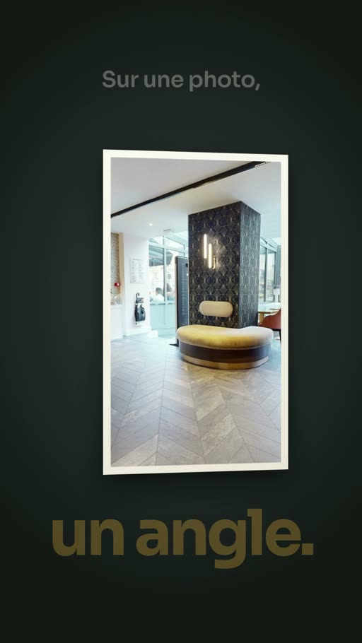
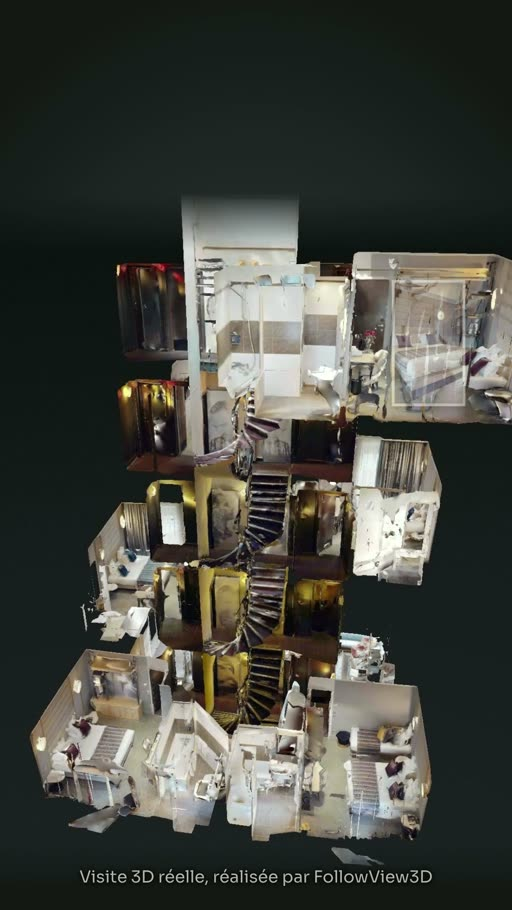
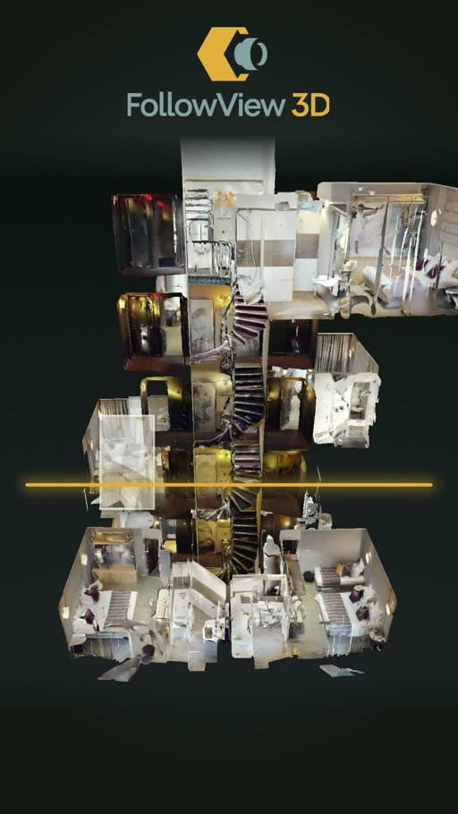

FollowView3D × VisuAstral
Notre visite 3D.
Expliquée en
20 secondes.
Nous avons confié à VisuAstral la création d’un film de motion design pour présenter notre service de visite virtuelle.
Le point de départ est simple : une photo montre un angle, tandis qu’une visite 3D permet d’explorer un lieu. Le film fait voir cette différence avant de présenter FollowView3D.
- 20 secondes
- Format vertical 9:16
- Voix française
- Sous-titres français
Les commandes permettent de le lire dans la page.
01 — L’idée
Montrer ce qu’une photo
ne peut pas montrer.
Pour un hôtel, un commerce ou un espace professionnel, il ne suffit pas toujours de montrer une belle image. Un visiteur veut aussi comprendre la disposition des pièces et ce qu’il pourra découvrir sur place.
Notre film commence donc par une photo cadrée sur un seul point de vue. Il ouvre ensuite l’espace et montre une visite 3D, avec des images issues de notre visite de l’Hôtel Nude. La démonstration précède l’explication.



02 — La réalisation
Un film réalisé
par VisuAstral.
Le motion design relie notre service à une situation concrète : découvrir un lieu avant de s’y rendre.
VisuAstral est un studio de motion design pour entreprises. Pour FollowView3D, le studio a construit la narration et les animations autour de cette différence entre photo et visite virtuelle.
La voix française guide la lecture, tandis que les transitions font passer du cadre de la photo à l’espace visitable. Le format vertical permet une lecture sur téléphone ; les sous-titres donnent également accès au message sans le son.
Les images de la visite proviennent de FollowView3D. L’Hôtel Nude a autorisé leur diffusion dans ce film.
Une très belle réalisation pour Followview3D. Le film met bien en valeur ce que nous proposons, avec un rendu dont nous sommes vraiment satisfaits. Ravi d’avoir confié ce projet à VisuAstral.
03 — La narration
Le film, à lire.
La transcription complète est disponible ici, ainsi que les sous-titres du lecteur.
Télécharger les sous-titres français (.srt)Sur une photo, vos clients ne voient qu’un angle. Avec une visite trois D, ils entrent… et vont où ils veulent. Pièce par pièce, étage par étage, depuis un simple lien. Ils savent ce qu’ils vont trouver, avant même de réserver. Follow View trois D scanne votre établissement. Demandez votre devis.
À vous d’explorer
Maintenant, entrez
dans la visite.
Découvrez nos exemples de visites virtuelles interactives et explorez les espaces à votre rythme.
Découvrir les visites 3DVous cherchez un film pour expliquer votre propre offre ? Découvrir le studio VisuAstral.